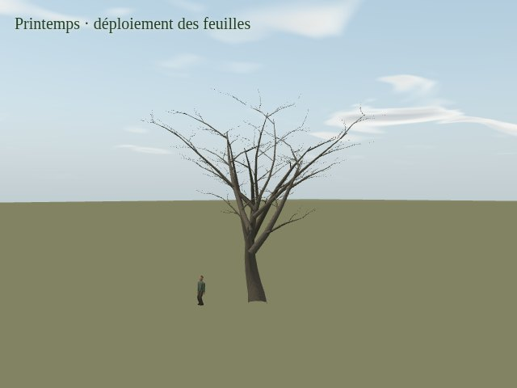
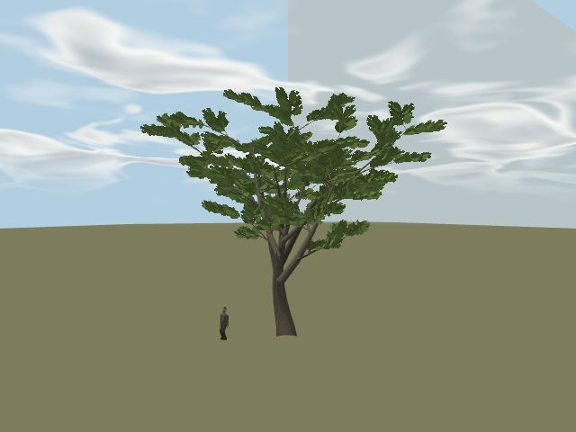
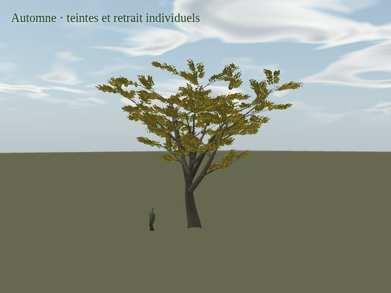
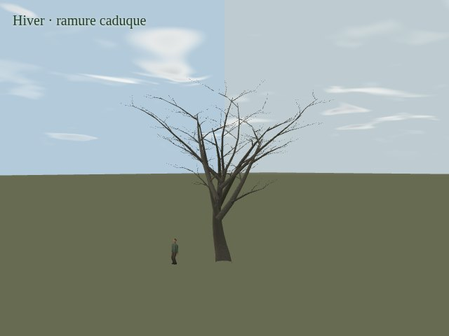
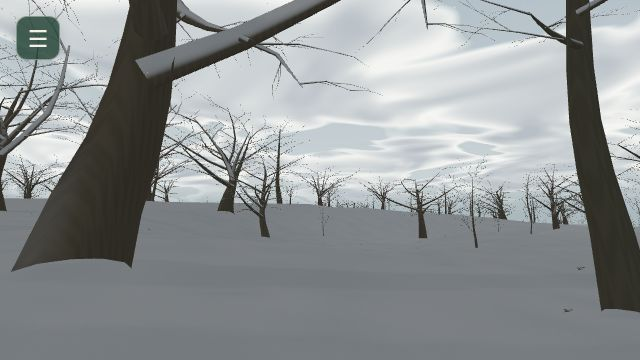

ENDLESS EARTH · MISSION 17C · PROPOSITION ARTISTIQUE
Le souffle des ramures
Un tronc presque immobile. Des branches qui prennent leur temps. Des pointes plus vives, puis le retour au calme. Onze architectures traversent le vent et les saisons du pilote.
Jalon soumis à validation artistique. 17D reste à faire. Les vidéos montrent Chromium avec SwiftShader, un rendu logiciel ; les prises dans le terrain sont lentes. Aucun résultat de téléphone physique n’est annoncé.
Vent modéré · feuillu étalé
Vitesse réelle · atelier synthétique, modèles et vent du jeu · 640 × 480.
Une même charpente, quatre moments

16 avril · premiers bourgeons et pousses
21 juin · feuillage développé
18 octobre · pigments et retrait par feuille
21 janvier · structure caduque visibleLes dates sont interprétées, variables entre familles et individus. Le frémissement est porté par les petites pousses feuillées ; chaque feuille de l’atlas possède son propre rang de croissance et de retrait. Il reste une simplification artistique.
Les prises dans le terrain réel
Forêt au vent
Profil Éco · 480 × 320 · caméra fixe à hauteur de marche. Cadence logicielle native conservée.
Neige sur le persistant
Profil Équilibré · caméra de revue fixe. Les ouvertures restent ouvertes ; le dépôt suit les surfaces.
Début de fonte
Météo douce commandée en mars, après la prise enneigée. La fonte conserve la lenteur M15 : variation discrète sur seize secondes, mesurée dans la trace.
Hiver sans boule blanche

Caducs du pilote en janvier · couche de surface M15, sans volume de couronne ajouté.
Lire les preuves et les limites
Les films d’atelier portent leur indication de vitesse dans l’image. Seul « Diagnostic calendrier accéléré » parcourt mars à décembre en dix-huit secondes. Les rafales et les mouvements gardent leur horloge native. Le conteneur WebM est indexé sans réencoder ses images ni changer leurs timestamps.
Les références externes ont servi à observer les appuis et les vitesses relatives. Aucun pixel de vidéo n’entre dans le feuillage. Les familles, leur phénologie et l’auto-exposition à la neige restent des interprétations ; il ne s’agit pas d’un relevé botanique ou météorologique.